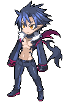
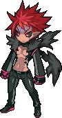
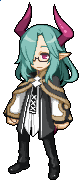
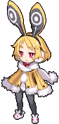
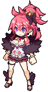
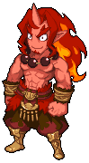

-
Killia Wanderer
Killidia quando ele se tornou um demónio de bom coração após se tornar um pupílo do demónio do punho demoníaco Goldion.
-
Killidia Tyrant Overlord
Killia no passado, quando ele era conhecido como "Tyrant Overlord Killidia". Ele se tornou alguém melhor depois de conhecer Goldion.
-
Christo Certain Great Overlrod
Um anjo que finge ser um Overlord. Porém, ele valoriza seus novos amigos overlords. Ele é o estrategista do exercito rebelde.
-
Usalia Toto Bunny Overlord
Uma overlord que é uma criança. Ela não entende porque todos os membros do exército rebelde se juntaram buscando vingança contra Void Dark.
-
Seraphina Gorgeous Ovelord
Uma overlrod que é a mais rica dos 3 mudnos (mundo humano, celéstia e submundo). Ela acha que com o dinheiro pode comprar todos e que o exército rebelde só são seus amigos por causa de seu dinheiro.
-
Zeroken Quick Draw Overlord

Um overlord e ex soldado do Lost e um aprendiz de Goldion. Ele considera Killia como um irmão mais velho aprendiz de Goldion.
-
Red Magnus S. flame Overlord
Um overlord que é considerrado burro e rude pelos outros. Porém, com o andar da sua luta com Lost, ele se torna alguém que realmente se preocupa com seus amigos.